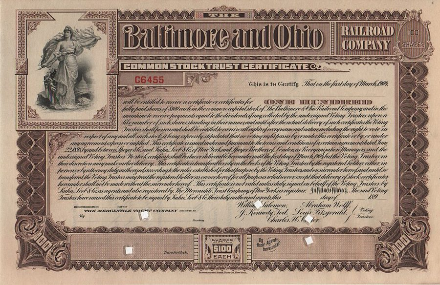
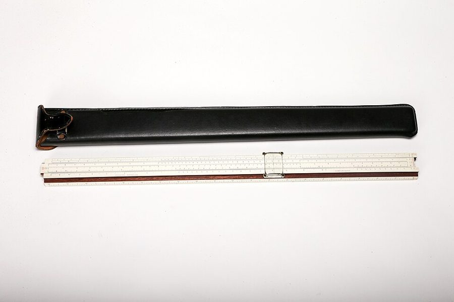
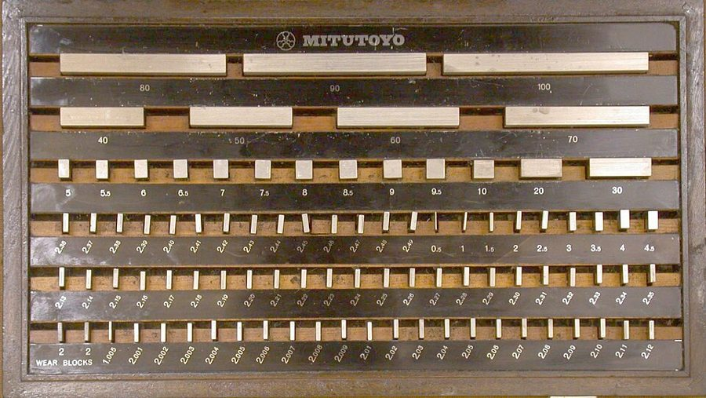
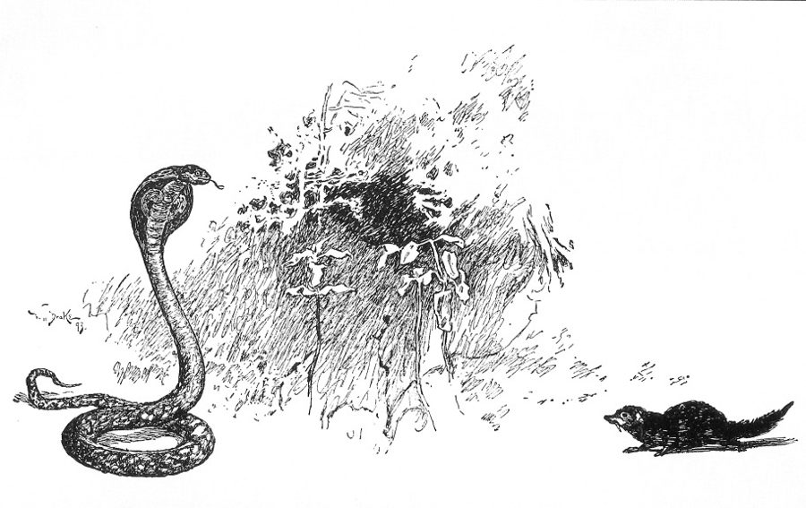
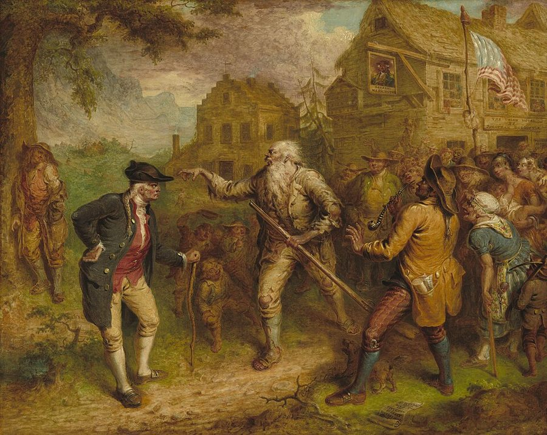

这一章在做什么
回忆的最后一段，讲的就是 Dan 在第 1 章里绕着不说的那件事。前半是一场只有三个人的会，按正式程序走：议程、提案、表决、记录，公司法的词一个接一个。中间是一封信、一包文件和一位律师，合同条款最密，是全章最难读的地方。
最后一节跳出回忆，接上这一章开头的那个晚上，Dan 还在路上。读的时候盯住两样：每张纸上写的是什么、谁签的字；票是按什么数的。

纸质股票（stock certificate）的样子。这一张是 1904 年一家铁路公司的股票信托凭证，与本书无关。那个年代股份就是这样一张纸，上面印着编号和股数；这类凭证的背面通常印着转让用的栏目。
Baltimore and Ohio Railroad，公有领域，维基共享资源 人物
老人物只写到上一页结束时你知道的。
Dan Davis 叙述者「我」 公司的总工程师兼董事长。成立时拿了 51% 的股份，后来把其中一部分过户给 Belle 当订婚礼物，票照旧由他投。正埋头改 Flexible Frank。
Belle Darkin Dan 的未婚妻 秘书兼司库，管公司的文件和账。Dan 眼里的完美秘书；和 Pete 处不来。
Miles Gentry 合伙人 总裁兼总经理，懂法律，管生意。想让 Frank 一年内投产，Dan 不肯。
Pete Dan 的公猫 这一页里出场不多。
Ricky Miles 的继女 十一岁左右，和 Dan、Pete 要好，不喜欢 Belle。只在最后两个场景被提到。
Jake Schmidt新 只提到，没出场 管装配线的车间主任。
Joe Todd新 巡逻公司的保安 中年人，说话土，场景 4 出场。
律师新 没有名字 场景 6 出场。Dan 说他精明、爱钱、打起官司来不择手段。
场景地图
这一页是第 2 章的第 112–254 段，本站按场景分成 8 段。粗体是每个场景开头的几个词，照着它在书里找位置；读完一个场景回来打个勾。
I PIDDLED ALONG with the …约 450 词 Dan 的作息，然后是一顿晚饭和饭后回厂。留意 Belle 的每句话，和保险柜那几句。 Miles cleared his throat and …约 1050 词 三个人的正式会议。两套方案对着摆，生意场的词最密；分清哪条是谁提的。 Miles said stubbornly, “Let’s do …约 300 词 点名表决。短，句句要紧。票是按股数算的，一个人一个人数清楚。 I didn’t sleep, of course. …约 500 词 凌晨的工厂门口，Dan 和一个带枪的保安。口语重，同一把枪换了四个叫法。 I read it in the …约 500 词 一封信，一包文件。合同条款扎堆，对照下面的行话表一条一条读。 I steadied down enough the …约 550 词 律师的办公室。他的话又快又俗；数一数他一共给了几条建议。 I HAD PLENTY of time …约 350 词 回忆结束，接上当晚：Dan 开车去 Miles 家，路上想起一件要先办的事。 When I managed to escape …约 800 词 药店的柜台上。他写了两张纸，中间停笔想了很久；留意他想通了什么。
背景：作者默认你知道的事
这些都是真实世界里的东西。按在书里出现的顺序排。
场景 2 小木屋前唱 spiritualsspirituals 是美国黑奴的宗教歌曲。「干完活的奴隶晚上坐在小木屋（cabin）前唱歌」是南方怀旧小说和老电影里的固定画面，用来说奴隶过得也挺快活。
1950 年代的读者一听就知道这个画面，也知道拿它说话的人是在讲反话。
场景 4 一把枪的四个叫法hogleg 是西部片里的大号左轮，样子像猪腿。field mortar 是野战迫击炮，blunderbuss 是 17、18 世纪的喇叭口火枪，iron 是俚语里的「家伙」。前三个是 Dan 叫的，一个比一个夸张；最后一个是持枪人自己的说法。
soft-nosed bullet 是软头弹：弹头前端不包硬壳，打进身体会变形撑开，伤口很大。
场景 5 slide rule
Keuffel & Esser 的计算尺和皮套。
美国中央情报局，公有领域，维基共享资源 计算尺。电子计算器出现以前，工程师靠它做乘除、开方、三角函数，拉一下滑尺就读出三位有效数字。它是这一行的随身物件，像今天的笔记本电脑。
书里说 my other slide rule ：干这行的人不止一把。
场景 5 yellow-dog contract美国劳工史上的一个骂名。原指老板逼工人签的一种合同：保证不加入工会，否则开除。工人说签这种东西的是「黄狗」。1932 年联邦法律规定法院不再强制执行它。
Dan 借这个名字骂另一种条款（见下面的行话），用得比原意宽。读者认得这个词，知道它不是好话。
场景 7 洛杉矶的三个地名San Fernando Valley 在市区西北，隔着一道山，战后盖满了新的郊区住宅，本地人只叫 the Valley，比沙漠里凉快得多。Sepulveda 是贯穿洛杉矶西区的一条南北向长街，翻山进 Valley 的路上有隧道。
Big Bear Lake 是洛杉矶以东山里的高山湖，海拔两千米上下，夏令营和滑雪的地方。
场景 7 Jo block
一套量块（公制）。每块的厚度准到万分之一毫米量级，几块叠起来可以拼出任意尺寸。
照片：Glenn McKechnie，CC BY-SA 3.0，维基共享资源 Johansson gauge block 的简称，瑞典人 Johansson 发明的量块。车间里所有的卡尺、千分尺都拿它来校准，它是「准」的源头，自己不会错。
机械师说一个人「像 Jo block 一样」，是他们能给出的最高评价。
场景 8 drugstore美国的药店不只卖药。1950 年代的 drugstore 里有文具、邮票、杂志，有卖汽水和冰淇淋的长柜台，角落里还有一台投币点唱机（jukebox）。它是街角的杂货铺，买信封信纸去那里很平常。
门外通常就有邮筒，筒上贴着下一次取信的时间。
场景 8 Rikki-tikki-tavi
Rikki-tikki-tavi 对着眼镜蛇 Nag。《丛林之书》1890 年代版本的插图。
W. H. Drake 绘，公有领域，维基共享资源 吉卜林《丛林之书》（1894）里的一只獴。它被一户人家收养，夜里替他们守着屋子，咬死了花园里的眼镜蛇。名字是它的叫声。
英语世界的孩子都听过这个故事。拿它给一个叫 Ricky 的孩子当昵称，一半是谐音，一半是夸。
场景 8 Rip van Winkle
John Quidor《Rip van Winkle 归来》（1849）。他睡着时这里还是英国殖民地，醒来旅店门口挂的已经是美国国旗。
John Quidor，公有领域，维基共享资源（美国国家美术馆藏） 华盛顿·欧文 1819 年的短篇。主人公进山喝了陌生人的酒，一觉睡了二十年，回村时老婆死了，朋友散了，连国家都换了。
美国人说 play Rip van Winkle ，就是一觉睡过一个时代。和第 1 章提到的威尔斯小说是同一个老题材。
书里的世界
这一页新的设定很少，故事几乎全靠真实世界的公司法和合同在推。下面几样是虚构的。
书里的说法 在书里是什么 真实世界里 Mannix Enterprises 一家有钱的大企业，在 Miles 的方案里出现。别的没说。 虚构。 Desert Protective & Patrol Company 给工厂做夜间巡逻的私人保安公司，有执照，带枪。 公司是虚构的，这个行当是真的。 the Air Force Slot Miles 从市郊到沙漠上班走的通道。没解释，像是一条快速干线。 — McNulty vs. Rhodes 律师随口引的一个判例。 应是虚构的案名。但它代表的规则是真的：许多州的法院把订婚礼物看成「以结婚为条件的赠与」。
这一章的行话，先用中文过一遍
这一页的情节是靠文件推动的。下面六个概念先过一遍，只讲概念本身。
股东会怎么开
议程
agenda
提案
motion
点名表决
roll call
计票
tally
通过 / 否决
carried / lost
“I so move”
aye 赞成 / no 反对
股东会 stockholders’ meeting：一股一票
念到谁，谁就按自己名下的股数投；股票的编号要念出来记进记录。
董事会 board of directors：一人一票
本站示意图。全程由公司的 secretary 做记录。先处理 old business（上次没了结的事），再进 new business。
股东会和董事会是两个不同的会，权限也不同：卖公司、改章程这类大事归股东会；任免高管、日常的大决定归董事会。同几个人，换个名义坐下来，就是另一个会。
信函落款里的头衔也要看：一个人是以什么身份签的字。
发明怎么变成钱：自己造，还是授权
自己造、自己卖
自己的公司
设计 + 工厂 + 销售网
要大笔资本（capital）
利润全是自己的
钱不够，就得找人出钱入股
授权 license
发明人
握着专利
别的公司
造 + 卖
许可
royalties
不用投钱，也不用管生产
每卖一台抽一份，赚得少些
本站示意图。粗线是钱。
左边那条路走到头，常见的结局是被大公司整个买下（sell out），变成它的子公司；书里把子公司叫 daughter corporation ，今天说 subsidiary。原来的老板留下来当经理，拿工资。
右边那条路叫 licensing：专利还是你的，别人付 royalties （使用费）来用。
雇佣合同里的三种条款
解雇和通知期。 合同可以写明公司有权随时解雇（terminate），条件是提前若干时间通知（notice），或者不通知而直接多付那段时间的工资，叫 pay in lieu of notice ，「代通知金」。
竞业限制。 员工答应离职后若干年内不做同一行。法院对这种条款向来挑剔，因为它等于不让人吃饭；所以起草的人会想办法给它找个对价，比如每年付一笔钱。
option 和 first refusal。 option 是花钱买下一个「将来可以优先……」的权利。right of first refusal 是优先权：你要做某件事，得先来问我要不要，我不要你才能找别人。两样合起来用在雇佣上，意思是：我付了钱，你要干这一行，得先问我雇不雇你。
assignment：转让，认的是签字
assign 是把一项权利正式转到别人名下。股份可以转让（股票背面就印着转让栏），专利也可以转让，转让书还可以拿去登记（registered）。
转让之后，权利归名下的人。法院先看白纸黑字和签名；口头的约定要另外拿证据来证明。
信托：替别人拿着
委托人
财产原来的主人
受托人 trustee
常是银行
受益人
beneficiary
转过去
到时才交
in trust for X：名义上归受托人，实际为 X 的利益保管
受益人是未成年人时最常用。银行里管这种事的人叫 trust officer
本站示意图。第 1 章里冷眠者的钱也是这样放着的。
好处是：财产既不在委托人手里，也还没到受益人手里，别人很难从这两头把它拿走。当时美国的成年年龄是 21 岁，不满 21 的人（a minor）自己签的转让在法律上有麻烦，所以常用信托替他们拿着。
律师怎么收钱
contingent fee 是「胜诉分成」：官司赢了，律师从赔偿里抽一份；输了不收钱。美国的民事官司常这么干。所以一个律师肯不肯按这种方式接案子，本身就是他对胜算的判断。
英文 中文 一句话 stockholders’ meeting 股东会 按股数投票的会。 agenda 议程 这次会要议的事项清单。 old business / new business 遗留事项 / 新事项 议事规则里的固定栏目。 motion；I so move 动议；我就此提出动议 把一件事正式交付表决。 roll call 点名表决 一个一个念名字，各自报赞成或反对。 tally 计票结果 赞成、反对各多少。 carried （提案）通过 The motion is carried。 financing 融资 从外面找钱。 capital structure 资本结构 公司的钱从哪来：多少是股东投的，多少是借的。「更宽的资本结构」是「引进新股东」的体面说法。 drawing account 预支账户 合伙人或高管平时从公司支钱用的户头，年底再和工资、分红对账。 daughter corporation 子公司 被另一家公司控股的公司。 license；royalties 许可；使用费 见上图。 mortgage 抵押（借款） 拿房子、厂子作抵押向银行借钱。 buy out 买断（某人的全部股份） 让一个合伙人拿钱走人。 assign；assignment 转让；转让书 不是「分配任务」。 terminate 终止（合同、雇佣） 公司单方面结束雇佣，就是解雇。 in lieu of notice 代替提前通知 lieu 读 /luː/，in lieu of = instead of。 option；first refusal 选择权；优先权 见上文。 duly registered 依法登记过的 duly：按规定手续。 bonded messenger 有担保的信使 投了保证保险的专人递送，东西丢了有人赔。 exhibit （提交的）证据材料 法庭上编了号的文件、物证。 conspiracy 合谋 两人以上串通做违法的事，本身就是一项罪名。 assault and battery 殴打罪 assault 是威胁要打，battery 是真打了，法律上常连着说。 impound 扣押 警察把车拖进扣车场。 court order；deputy sheriff 法院命令；副警长 sheriff 是县一级的治安官，法院的命令常由他的副手去执行。 consideration 对价 合同法的词：一方为换取对方的承诺而付出的东西。不是「考虑」。 in trust for 为……托管 见上图。
词与短语
词条按在书里出现的顺序排，按场景分组。斜体小字是它所在的那句话里的几个词，方便你在书里找到。
场景 1 I PIDDLED ALONG with the …
piddle along
… I PIDDLED ALONG with the help …
不紧不慢地磨着干
piddle：磨蹭、瞎忙。Dan 的自谦。
a three-car crash
… less like a three-car crash and …
三车连撞的现场
smooth bugs out
… I smoothed a lot of bugs out …
把毛病一个个理顺
bug 指机器的毛病，这个用法比计算机早得多，爱迪生就用过。
crowd
… Miles didn’t crowd me, although he …
逼，催
及物动词：挤到人跟前施压。
stink like a goat
… makes a man stink like a goat. …
臭得像头山羊
stand
… lab shop nobody could stand me …
受得了
can’t stand someone：受不了某人。
gather up loose ends
… wants to gather up loose ends and …
把没了结的零碎事收一收
loose ends 是绳子没扎好的线头。常说 tie up loose ends。
stick close to
… “I’ve been sticking close to the …
一门心思守着
spin the knob
… to the safe, spun the knob, and …
转动（保险柜的）密码盘
combination 是密码组合。
the patrol
… “Didn’t I tell you? The patrol asked …
巡逻公司（的人）
工厂雇的夜间保安。
burglar scare
… it after that burglar scare last …
闹贼的一场虚惊
scare 作名词：一阵恐慌，多半没真出事。
at a ghastly hour
… of you at a ghastly hour.” …
在吓人的钟点（深更半夜）
场景 2 Miles cleared his throat and …
make pothooks
… you had better make pothooks...Uh, Wednesday, …
记速记
pothook 是挂锅的钩子。速记符号弯弯钩钩，所以这么叫。那时的秘书都会速记。
preside
… of the board and presiding. Any …
主持（会议）
president 就是从它来的。
it’s your show
… “Okay, Miles, it’s your show. Any …
这是你的场子，你来
in the black
… Don’t be silly. We’re in the black …
盈利
账本上盈余用黑墨水，亏损用红的：in the red。
go to the trouble of
… I’ve gone to the trouble of …
特意费了功夫去
gobbledygook
… Skipping the gobbledygook—like all lawyers, Miles …
绕口的官样文章
1944 年一位美国国会议员造的词，模仿火鸡叫。polysyllables 是多音节的大词。
save your comments
… an orderly manner. Save your comments. Let …
意见先留着
save 是「留到后面」。be entitled to：有权。
in effect
… Point (b) was in effect that …
实质上就是
fritter around
… we should quit frittering around as …
小打小闹地耗着
fritter away：一点一点浪费掉。
a one-horse outfit
… around as a one-horse outfit. We …
不起眼的小作坊
one-horse：只有一匹马的，小得可怜。outfit 是口语里的「单位、公司」，这一页出现好几次。
in at the start
… and we were in at the start; …
一开头就入了场
soldering gun
… picked up a soldering gun, the …
焊枪
大厂里工种划得死：工程师动手焊东西，算抢了工会会员的活。pull a strike 是发动罢工。
make general
… Army and tried to make general. …
升到将军
make + 军衔或职位：当上。
on pennies
… couldn’t do this on pennies; it …
靠几个小钱
put up the dough
… Mannix Enterprises would put up the dough—what …
出钱
put up：拿出（钱、担保）。dough 是俚语的钱，上一章见过。
what it amounted to
… dough—what it amounted to was that …
说穿了就是
sell out
… that we would sell out to Mannix, …
把公司整个卖掉
另一个意思是「出卖原则」。Dan 两层意思都要。
lock, stock, and Flexible Frank
… Mannix, lock, stock, and Flexible Frank, …
连锅端，一样不剩
习语是 lock, stock, and barrel：枪机、枪托、枪管，一支枪的全部。Dan 把 barrel 换成了他的机器。
hired hands
… gone; we’d both be hired hands. …
雇工，打工的
hand 是干活的人手。和公司的名字 Hired Girl 是同一个 hired。
jerk out of
… was forever being jerked out of …
被猛地拽出来
was forever being：老是被。
unpalatable
… down this utterly unpalatable plan to …
难以下咽的
rub shoulders with
… plan to rub shoulders with General …
和……平起平坐地打交道
I certainly was not twins
… Consolidated. I certainly was not twins; I …
我又不是双胞胎
分不出两个人来。
rake in the royalties
… while we raked in the royalties. …
坐着收使用费
rake in 上一章见过：大把搂钱。
swell
… outbid the market, swell! Meantime, …
那敢情好
1950 年代的口语，等于 great。outbid 是出价高过别人。
hold it down to
… Corporation and hold it down to …
把规模压在
jackleg
… to help me jackleg new gadgets. …
土法上马地凑出来
jackleg 本是形容词「半吊子的」，Dan 当动词用。
granted
… us some money, granted. But not …
这我承认
放在句末，先让一步，后面必有 but。
Confound it
… “Confound it, Miles, we wouldn’t be …
见鬼
比 damn it 斯文。
You want out, Pappy?
… at Sandia. You want out, Pappy? Belle …
想退伙了，老哥？
want out = want to get out。Pappy 是「老爹」，对年纪大些的伙伴的亲热叫法。
buy you out
… or something and buy you out. …
把你的那份全买下来
tied down
… any man to feel tied down.” …
被拴住
shocked to my heels
… I was shocked to my heels, …
从头震到脚
I so move
… by the corporation. I so move.” …
我就此提出动议
议事的套话。move 是「提议」，不是移动。
do it the hard way
… insist on doing it the hard way? …
非走费劲的那条路
put up
… But I won’t put up my …
提出（提案）
这一场景里 put up 的第二个意思，前面是「出钱」。
场景 3 Miles said stubbornly, “Let’s do …
roll call
… do this properly. Roll call, Belle.” …
点名表决
roll 是名册。
How say you?
… the serial numbers. “How say you?” …
您投什么票？
法庭和议事场合的古式问法，语序是倒的。回答 Aye（读「爱」）或 No。
a string of telephone numbers
… off a string of telephone numbers …
一长串「电话号码」
Dan 的挖苦，指念出来的股票编号。the formality：走过场的手续。
announce the tally
… “Announce the tally,” Miles growled. …
宣布计票结果
growl：低声吼。
The ayes have it
… “The ‘ayes’ have it. The proposal …
赞成的一方胜出
议会里宣布表决结果的固定句子。
carried
… it. The proposal is carried.” …
（提案）获得通过
assign
… true, I had assigned the stock …
（正式）转让
法律上的过户。上一页说的是 sign over，同一件事。
part with
… had no intention of parting with …
放手，交出去
pure and simple
… an engagement present, pure and simple. …
仅此而已
放在名词后面。
stalk out
… then shut up and stalked out …
僵着身子大步走出去
it was high time
… without my hat. It was high time …
早就该（走了）
场景 4 I didn’t sleep, of course. …
loading dock
… the truck to the loading dock so …
装卸货的月台
tailgate
… Flexible Frank over the tailgate—Frank weighed …
（卡车的）后挡板
放平了可以当跳板。四百磅约 180 公斤。
shinny over
… I shinnied over, cutting myself on …
手脚并用地翻过去
barbed wire 是带刺铁丝网。
jack
… or get the jack out of …
千斤顶
tire iron 是撬轮胎的铁棍。他在盘算用哪样破门。
hogleg
… was pointing a hogleg at me …
大号左轮手枪
见「背景」。
match the description
… “Yeah, you match the description. But …
跟他们说的长相对得上
警察认人的说法。有人事先向他描述过 Dan。
Name of
… you’d know. Name of Joe Todd, …
我叫……
省了主语和动词的土话。Todd 说话一路这样省。
be on
… tonight I’m on as special guard.” …
当班
be on (duty)。
leveled at
… still kept it leveled at me. …
平端着对准
couldn’t rightly
… “I couldn’t rightly do that, Mr. …
可不能那么办
rightly 在乡下口语里只是加强语气。
particular orders
… I had particular orders about you. …
专门的交代
particular：特地针对某件事的。
chance
… Because I couldn’t chance shooting you …
冒险去（做）
chance 作动词。
a good shot
… legs; I ain’t a very good shot. …
枪法好的人
shot 指射手。ain’t = am not，不规范的口语。
iron
… bullets in this iron; it’ud be …
枪
俚语。it’ud = it would。messy：弄得一塌糊涂。
场景 5 I read it in the …
regular meeting
… At a regular meeting of the …
例会
按章程定期开的会，区别于临时召集的 special meeting。
as permitted under
… corporation, as permitted under paragraph three …
依照（某条）所允许的
paragraph 在合同里是「条」。
stay off
… requested that you stay off company …
不要踏进
It is requested that … 是公文的被动腔，意思是命令。
differences in policy opinion
… and regrets the differences in policy …
经营方针上的意见分歧
解雇信里的套话。
invoke
… under which to invoke paragraph three …
援引（条款）
where I kept my clean underwear
… motel where I kept my clean …
我搁换洗内衣的地方
不说「我住的旅馆」。意思是那里算不上住处，只是放东西。
sure enough
… “contract,” for example—sure enough, paragraph three …
果不其然
subject to
… without notice subject to three months’ …
以……为条件
合同用语。上一页的 subject to 是「容易得（病）」。
refrain from
… employee agrees to refrain from engaging …
不得（从事）
option his services
… him cash to option his services …
花钱买下优先雇用他的权利
option 作动词。电影公司买小说的改编权也用这个词。
hat in hand
… just by going, hat in hand, and …
低声下气地
摘了帽子拿在手里去求人。这句后面还有半句，拿一顶真帽子接了这个比方。
my own creature
… corporation was my own creature and …
我自己一手造出来的东西
creature 本义是「被创造出来的」，也指受人摆布的傀儡。
less
… item of the check—accumulated “salary” less …
减去
介词，账单用语。disbursements 是支出的款项。
services rendered
… express “appreciation of services rendered.” That …
所提供的服务
账单和感谢信里的套话。
real sweet of them
… That last was real sweet of …
他们可真贴心
反话。real 当副词用，口语。
not too bright
… had probably not been too bright …
不怎么聪明
往轻里说，意思是蠢透了。
场景 6 I steadied down enough the …
steady down
… I steadied down enough the next …
定下神来
biting in the clinches
… and biting in the clinches. At …
搂在一起时偷着咬人
拳击里两人抱住叫 clinch，这时咬人是犯规。说这位律师什么手段都使。clapper-claw 是老词：又抓又挠。
You haven’t got a prayer
… “Do nothing. You haven’t got a prayer.” …
你一点指望都没有
连祈祷都帮不上。
rook
… I said. They rooked you. But …
坑了，骗了
rook 是一种乌鸦，也是骗子。
cut off without a penny
… stock or cut you off without …
一个子儿不给地打发掉
本来说的是剥夺继承权。
kosher
… everything had been kosher and you …
合规矩的，正当的
本义是合乎犹太教饮食戒律的。
have … coming to you
… everything you had coming to you...and …
你应得的
to boot
… and a measly thousand to boot, …
外加
和靴子无关，是个古词，意思是「额外的好处」。measly：少得可怜的。
break the logjam
… one chance to break the logjam. …
打破僵局
logjam 是河道里卡成一堆的浮木。下一个场景里 Dan 用它说堵车。
beside the point
… voted it; that’s beside the point. …
与正题无关
disgorge
… marry you or to disgorge. McNulty …
吐出来，交还
法律上指退还不当得来的东西。
I wouldn’t have her
… her now. I wouldn’t have her.” …
白给我都不要
wind up
… but you might wind up committed …
落得……的下场
读 /waɪnd/。committed 是被送进（精神病院），上一章见过。
Napoleon factory
… committed to a Napoleon factory with …
疯人院
笑话里的疯子总说自己是拿破仑。
buck
… most go ahead and buck their …
硬顶，对着干
本来说马尥蹶子。
phraseology
… to see that phraseology tested, as …
措辞
tested 指拿到法庭上验一验站不站得住。
clean you out
… sue you and clean you out …
把你掏得一干二净
a couple or nine
… had a couple or nine drinks. …
两三杯，也可能是九杯
a couple or three 的夸张版。
场景 7 I HAD PLENTY of time …
bumper to bumper
… I was bumper to bumper in …
车顶着车，堵得一动不动
bumper 是保险杠。
off my person
… Girl stock off my person before …
不带在身上
on one’s person：随身带着。法律和警察用语。
rough stuff
… not expect any rough stuff (unless …
动粗
hauled in
… Suppose I was hauled in for …
被抓进局子
haul 是拖。towed in 是车被拖走。
general delivery
… lately from general delivery at the …
存局候领
信寄到邮局，本人凭证件去取，没有固定地址的人用。GPO 是邮政总局。
mighty
… that was a mighty short list. …
非常
美国口语里当副词用，等于 very。
a glutton for punishment
… may seem a glutton for punishment …
吃了亏还不长记性的人
glutton 是贪吃的人。对「挨打」贪吃。
clipped
… I had been clipped by another. …
被宰了，被坑了
clip 是剪（羊毛）。
honest as a Jo block
… being honest as a Jo block, …
像量块一样实在
见「背景」。
场景 8 When I managed to escape …
throughway
… I got off the throughway and …
快速路
今天多说 freeway 或 highway。
Doggone it
… and thought. Doggone it, if anything …
该死
God damn it 的委婉变体。
read someone a lecture
… the lecture the doc had read …
把某人训了一顿
lecture 是训话，不是讲课。
stiffen my spine
… read me had stiffened my spine; …
让我硬气起来
spine 是脊梁骨。
examine the books
… the right to examine the books; …
查账
the books 是公司的账簿。股东有权查，哪怕只有一股。
poke my nose into
… entitled me to poke my nose …
插手过问
make a stink
… but I could make a stink and …
把事情闹大，闹得难看
shy off
… the Mannix people to shy off …
吓得缩回去
本来说马受惊往旁边一闪。
in hand received
… one dollar in hand received and …
已当面收讫
契据的套话。象征性地写上「收到一美元」，这份转让就有了对价。
valuable considerations
… received and other valuable considerations I …
有价值的对价
见行话表。和「考虑」无关。
blare
… with a jukebox blaring in my …
（喇叭）震天响
red tape
… avoided all the red tape of …
繁琐的手续
从前公文用红带子捆。a minor 是未成年人。
blot out
… nor try to blot them out …
抹掉，盖住
ethanol in various flavors
… again with ethanol in various flavors. …
各种口味的乙醇
工程师对「酒」的叫法。
sit tight
… but just by sitting tight I …
原地不动，耐心等着
whistle at the girls
… probably, to whistle at the girls. …
冲姑娘们吹口哨
当时的人拿它当「人还没老」的标志。
one lulu of a fight
… to have one lulu of a …
一场了不得的大架
a lulu：出类拔萃的一个（好坏都能说），老俚语。
scrap
… had been in a scrap—like the …
打架
口语。不是碎片。
You ought to see the other cat!
… “You ought to see the other …
你该去看看另外那只猫（更惨）
人打完架挂着彩嘴硬的话是 You should see the other guy。
值得停下来的句子
“There ought to be something in there granting us the right to sit in front of the cabin at night and sing spirituals.”
— 场景 2，Dan 听完三点方案之后。本站译：「里头还该加一条，准许我们晚上坐在小木屋门口唱唱灵歌。」
in there 指那份方案。granting us the right to … 是合同腔：「兹授予我方……之权利」。Dan 用最正式的句式提了一个最荒唐的条款，意思是：照这个方案，我们就是种植园里的奴隶，那就把奴隶该有的那点消遣也写进去。
Miles 说这不是玩笑，Dan 回答他也没开玩笑。
The only witnesses I had were ...Miles and Belle.
— 场景 6。本站译：我仅有的证人是……Miles 和 Belle。
省略号是原书的。律师问：你说没签过，谁能替你作证？Dan 把公司里的人过了一遍，发现办公室里的事从头到尾只有三个人知道，另外两个正是对面的人。
几段之后，律师问到那批股票，同一个发现又来了一次，这回写的是 the same old two 。两次停顿，是 Dan 两次撞上同一堵墙。
about like seeing the end of a movie without having seen what goes before.
— 场景 8。本站译：差不多就像只看了电影的结尾，没看前头。
Dan 在说服自己：一觉睡到 2000 年不划算。第 1 章里也有一个胶片的比方，方向相反：那里把冷眠说成从一个人的胶片上「剪掉」一代人，剪掉是为了早点看到后面。
about like 是口语，等于 pretty much like。what goes before 用现在时，把三十年说成一部正在放的片子。
检查一下理解
先在心里答，再点开。答错的那题，回书里把对应的场景再读一遍。
1.（场景 1）Belle 说 Miles 没告诉她为什么开会。这是实话吗？Dan 当时听出来了吗？
不是实话。到了厂里 Miles 一开口就让她去拿议程，说明她早就知道。讲故事的 Dan 说「光这一点就该让我明白」，但当时的 Dan 没往那儿想，一是他信她，二是他的注意力被保险柜换了密码这件事引开了。
2.（场景 2）Miles 的方案有哪三点？Dan 的反提案是什么方向？
Miles：把 Frank 从 Dan 手里拿走，交给量产团队马上上市；公司立刻扩张成全国、全球的规模；钱由 Mannix 出，实际上是把公司卖给 Mannix 当子公司，两人都变成雇员。Dan 正相反：公司不扩反缩，不再自己生产，把产品授权给别人造，三个人只做研发、收使用费。
3.（场景 2）Dan 提出「我可以把你的股份买下来」，是在赶 Miles 走吗？
不是。他以为 Miles 只是在沙漠里待腻了，想给老朋友一条体面的退路，还说不愿意任何人觉得被拴住。他完全没意识到这是一场已经安排好的表决，所以后面才会说「票是反对，记下来，改天再谈」。
4.（场景 3）Dan 明明有 51%，为什么输了？
点名表决按每人名下的股数算。Dan 的 51% 里有一部分已经过户给 Belle 当订婚礼物，他名下剩的不到一半。Belle 用她名下的股份投了赞成，加上 Miles 的，过了半数。「票还是由我投」只是两人之间的默契，没有写在任何纸上。
5.（场景 3）婚约是谁解除的？用的什么理由？
Belle。Dan 先吼她，再讲理，又说她不诚实，最后问「订着婚就这样，结了婚还得了」。Belle 接过这个话头：你这样跟我说话，还以为我们订着婚？然后让 Miles 送她回家。
6.（场景 4）Dan 凌晨去工厂想干什么？他为什么没硬闯？
想用卡车把 Frank 运走。门锁全换了，保安奉命专门拦他，还客客气气地说自己枪法差，打不准腿，只能打肚子。Dan 承认大概是这句话起了作用，又说他宁愿认为是因为从窗户里看见 Frank 已经不在原处，闯进去也没用。
7.（场景 5）信里说「依照你合同的第三条」。Dan 签过合同吗？
他不记得签过，也不记得转让过任何专利。可是包裹里有一份有他签名的雇佣合同，还有登记过的专利转让书。他自己得出的解释是：这些年 Belle 递过来什么他就签什么，从来不看。签名是真的。
8.（场景 5）第七条为什么让 Dan 说「宁可抹脖子」？
那是一条竞业限制：五年之内他不能做家用电器这一行，除非先回去问 Miles 和 Belle 要不要雇他。他们为此付了一笔 option 钱，所以条款在法律上有了对价。对一个只想自己当老板、只会造这类东西的人，这等于把手捆上。
9.（场景 6）律师一开始很想接这个案子，后来为什么劝他什么都别做？他指出的唯一突破口是什么？
看完文件他发现对方做得滴水不漏：没偷股票，没克扣一分钱，给的正好是「正常解雇」该给的，还多一千。合同和转让书上都是 Dan 的亲笔签名，而能证明内情的证人只有对方两个人。突破口是那批订婚礼物：如果能证明是以结婚为前提送的，可以逼她要么结婚要么退还。但证人还是那两个人，Dan 也不想娶她了。
10.（场景 8）Dan 为什么另写一张纸，而不用股票背面的转让栏？他对冷眠的打算变了吗？
另写的纸和股票一起封进小信封：他要是出了事，银行照这张纸替 Ricky 托管到她 21 岁；他要是没事，把信封要回来，撕掉那张纸就行，不必让一个未成年人再办一次转让。写到一半他发现自己已经拿定主意：不去冷眠了，留下来跟那两个人斗，这张股票是他手里最好的武器。
留给后面的问题
这些是这一页的文字自己提出来、但没有回答的。
Frank 的样机、笔记和图纸去了哪里？Dan 说他「后来才知道」Frank 有没有被申请专利。实情是什么？
今晚这场「宣战」会谈成什么样？
他说不去冷眠了。可第 1 章里他签了合同，约的是明天中午。